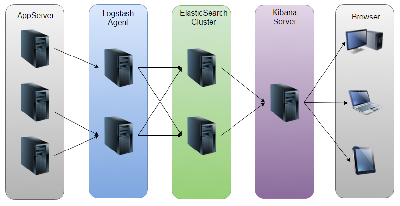

日志主要包括系统日志、应用程序日志和安全日志。系统运维和开发人员可以通过日志了解服务器软硬件信息、检查配置过程中的错误及错误发生的原因。经常分析日志可以了解服务器的负荷，性能安全性，从而及时采取措施纠正错误。
通常，日志被分散的储存不同的设备上。如果你管理数十上百台服务器，你还在使用依次登录每台机器的传统方法查阅日志。这样是不是感觉很繁琐和效率低下。当务之急我们使用集中化的日志管理，例如：开源的syslog，将所有服务器上的日志收集汇总。
集中化管理日志后，日志的统计和检索又成为一件比较麻烦的事情，一般我们使用grep、awk和wc等Linux命令能实现检索和统计，但是对于要求更高的查询、排序和统计等要求和庞大的机器数量依然使用这样的方法难免有点力不从心。
开源实时日志分析ELK平台能够完美的解决我们上述的问题，ELK由ElasticSearch、Logstash和Kiabana三个开源工具组成。官方网站：https://www.elastic.co/products
Elasticsearch是个开源分布式搜索引擎，它的特点有：分布式，零配置，自动发现，索引自动分片，索引副本机制，restful风格接口，多数据源，自动搜索负载等。
Logstash是一个完全开源的工具，他可以对你的日志进行收集、过滤，并将其存储供以后使用（如，搜索）。
Kibana 也是一个开源和免费的工具，它Kibana可以为 Logstash 和 ElasticSearch 提供的日志分析友好的
Web 界面，可以帮助您汇总、分析和搜索重要数据日志。
ELK是目前比较流行的日志分析框架，很多公司都在使用，今天想着自己搭建一个自己的实时日志分析平台。

如图所示，AppServer产生原始Log，Logstash收集Log，并根据定义的filter对Log进行自定义解析，并存放到ElasticSearch集群中，而Kibana则从ES集群中查询数据生成图表，最终呈现给Browser。
安装环境：
ElasticSearch: 5.5.0
Logstash: 5.5.0
Kibana: 5.5.0
Java: >=1.8
ELK下载：https://www.elastic.co/downloads/
ElasticSearch:
安装好ElasticSearch后，编辑配置文件：
|
|
修改为：
其他选项保持默认，然后启动elasticsearch:
或者使用后台进程的方式启动elasticsearch:
ES集群中的节点是通过Transport模块来实现相互通信的，从图中可以看到，node-0节点与ES集群中其它节点的通信端口为9300。另外，节点通过HTTP模块来暴露它的REST API，端口为9200。
打开localhost:9200，会看到配置的cluster_name和node name，以及安装的ES的版本等信息：
安装ElasticSearch-Head
ElasticSearch-Head是一个用浏览器跟ES集群交互的插件，可以查看集群状态、集群的doc内容、执行搜索和普通的Rest请求等，安装可参考官网：https://github.com/mobz/elasticsearch-head
需要注意的是，对于Elasticsearch 5.x， 通过插件安装ElasticSearch-Head不再被支持，需要单独安装。方法如下：
|
|
最后浏览器打开http://localhost:9100
Logstash:
Logstash实质上是一个日志收集器，需要为它指定Input和Output，可以有多个Input和Output。举个例子，比如我们需要把Java代码里Log4j的日志放到ElasticSearch中，那么Input就是Log4j，Output就是ES集群。Filter就是定义放到ElasticSearch中的日志是什么格式的/有哪些字段，具体使用见另一篇博文：实习第六周整理。
安装Logstash之后,编辑配置:
这里新建了一个配置文件,内容如下:
启动Logstash,用-f指定配置文件
Logstash配置和启动完毕
Log4j生成日志:
收集器有了(Logstash),收集后放在哪里也清楚了(ES),但是还没有日志…所以现在需要有一个程序产生日志,这里就用Log4j
建立Maven工程,并在pom.xml中添加log4j依赖:
使用log4j需要配置log4j.properties
这里配置了log4j的两个appender:SocketAppender和ConsoleAppender。 Log4j通过socket与运行在localhost:4567的Logstash实例通信,将日志传输过去。
下面是产生日志的代码,使用PropertyConfigurator显式地加载log4j.properties
除了将log4j作为Logstash的Input,Logstash还支持很多Input Plugins,详见https://www.elastic.co/guide/en/logstash/current/input-plugins.html
https://my.oschina.net/itblog/blog/547250
Written with StackEdit.